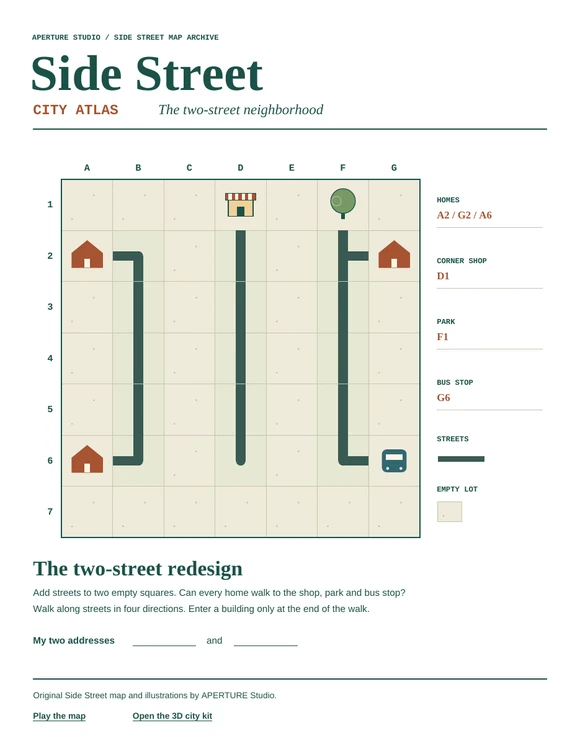

Thanksgiving Table Draft
Four foldable place cards give each guest a name panel and a different gratitude or conversation prompt.
Three activities for the Thanksgiving table, game day, and a quiet afternoon with a map. Each free printable fits one US Letter sheet.
Credit the words and illustrations to APERTURE Studio. Link readers to the individual item page so they can preview and download their own copy.
Four foldable place cards give each guest a name panel and a different gratitude or conversation prompt.

Use three swatches to invent team colors, design a game-day look on a blank face chart, and follow the original Crosswind passing play.

Read the coordinate key, pick two street changes, and trace how they change a walk through the neighborhood.
Give everyone a place at the Thanksgiving table and something to talk about. Print APERTURE Studio’s four place cards, add names, fold them, and let the first guest pick a prompt.
Could two new streets change your walk home? Put APERTURE Studio’s Side Street City Atlas on the table over holiday break. Give two people a pencil each and compare the routes they draw.
Design a team palette and follow a football play on one game-day sheet
Can two new streets shorten the walk home?
Try the two-street challenge in a browser. Trace a walk from a home and compare access to neighborhood destinations.
Choose a kit and explore how preferences change its illustrative 3D scene. Start with the city or makeup preview.
Choose a recipient, an interest, and a dollar cap to see individual APERTURE ideas. Enter a zero-dollar budget for free activities.
Editors can copy the iframe into a supported page or use the ordinary link included in the guide.
Each silent MP4 shows how to use one printable.
For a regional activity guide, an editor preview, or a library or club pilot, email Pratik Singh with the item and audience you have in mind. parry.s.2324@gmail.com